Ci-dessous un résumé de l'article que vous retrouverez ici,
qui recense des outils pour booster votre console, ils remplacent avantageusement
leurs illustres prédecesseurs. Le tout testé sur OSX.
Pour remplacer cat bienvenue à bat
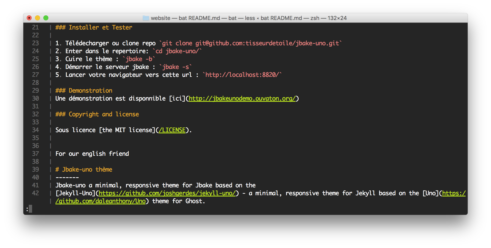
* site officiel
# brew install bat
pour remplacer ping bienvenue à prettyping
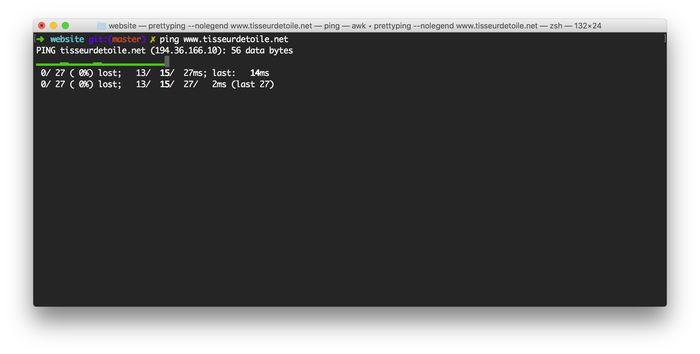
* site officiel
# brew install prettyping
Un couteau suisse de recherche dans les fichiers votre historique ... etc.
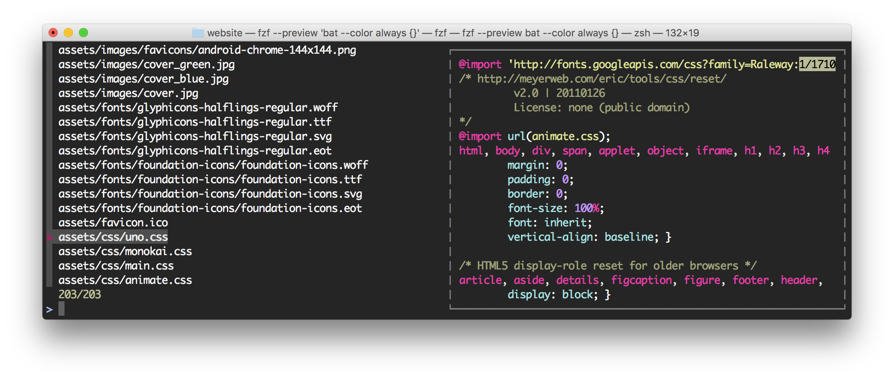
* site officiel
# brew install fzf
rechercher dans votre historique avec classe (CTRL-R)
rechercher dans vos fichiers avec preview fzf --preview 'bat --color always {}'
votre historique dans le cloud.
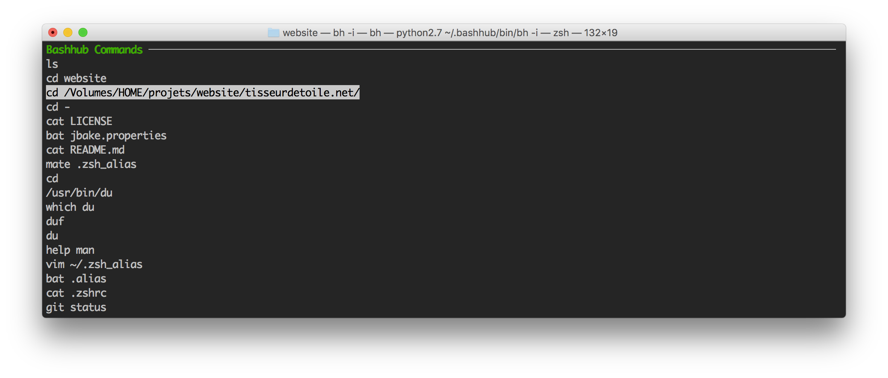
site officiel
zsh # curl -OL https://bashhub.com/setup && zsh setup
bash # curl -OL https://bashhub.com/setup && bash setup
CTRL-b
bh -i
Suivre vos performance système.
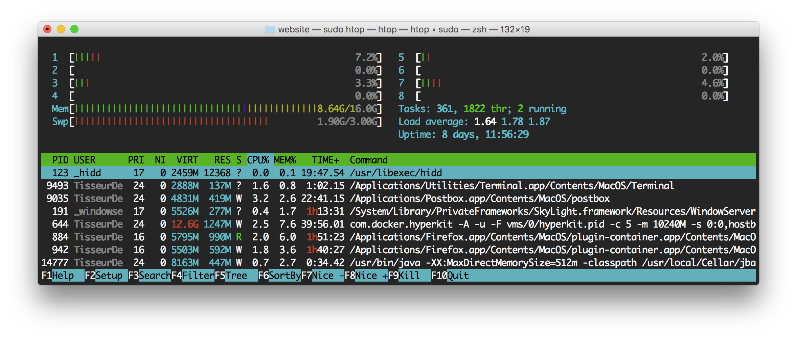
* site officiel
# brew install htop
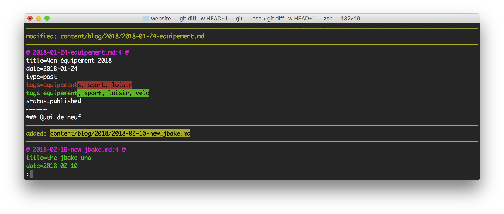
* site officiel
# brew install diff-so-fancy
rechercher dans vos dossier
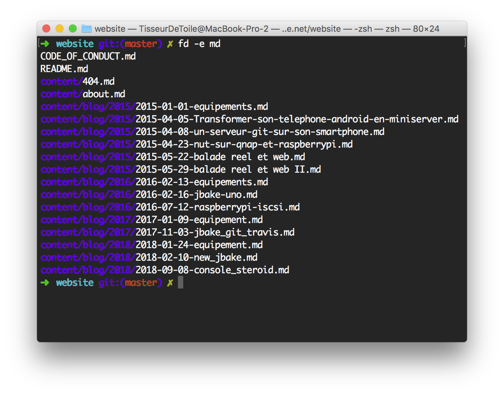
* site officiel
# brew install fd
Affiche une arborecence de repertoire dans le terminal.
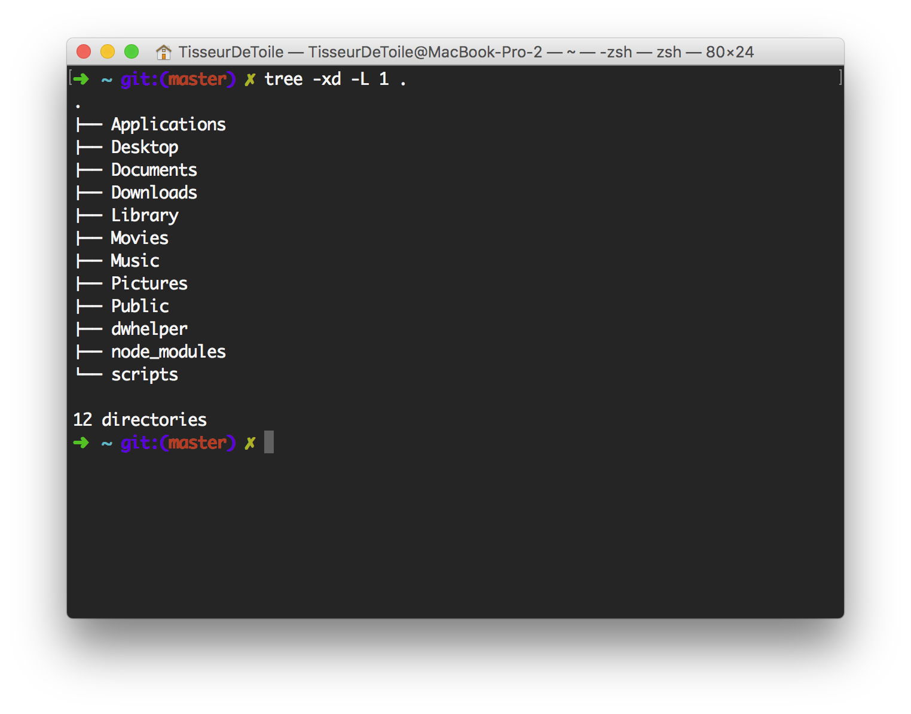
* site officiel
# brew install tree
tree -xd -L 1 .Interactive disque usage.
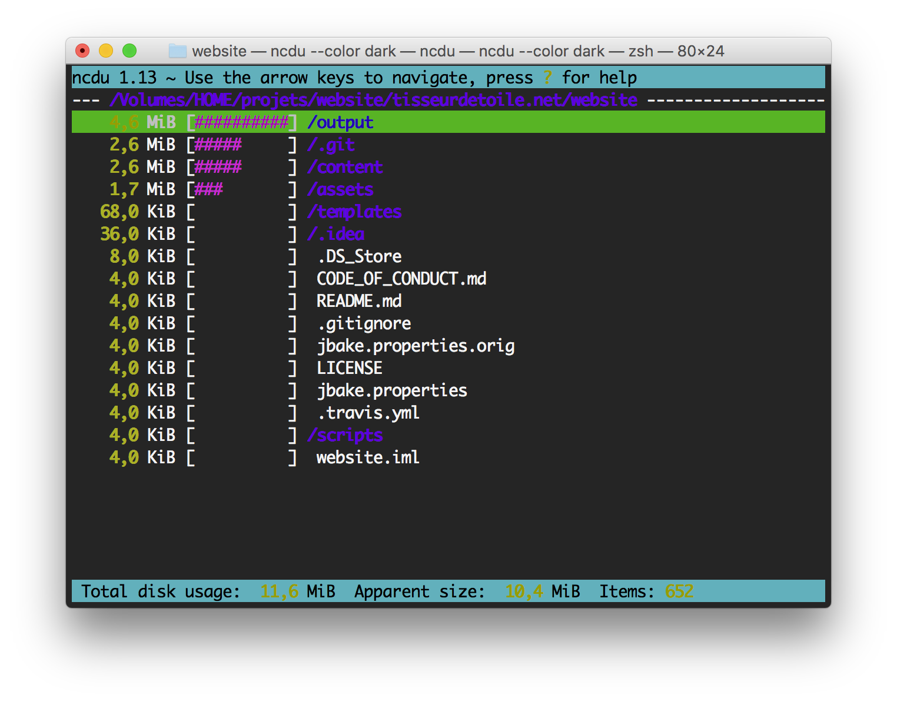
* site officiel
# brew install ncdu
ncdu --color darkExportation de son terminal accessible par une url
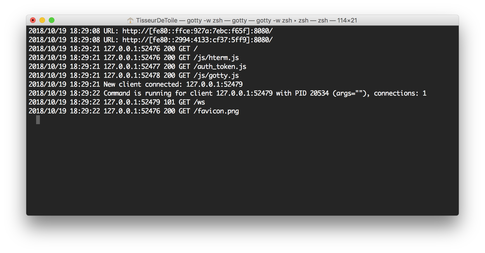
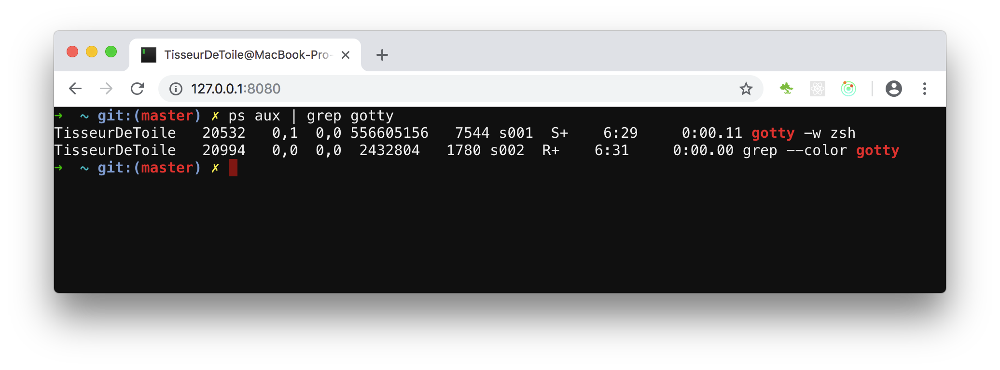
brew install yudai/gotty/gotty
gotty -w zshInterpréter les flux json comme un boss
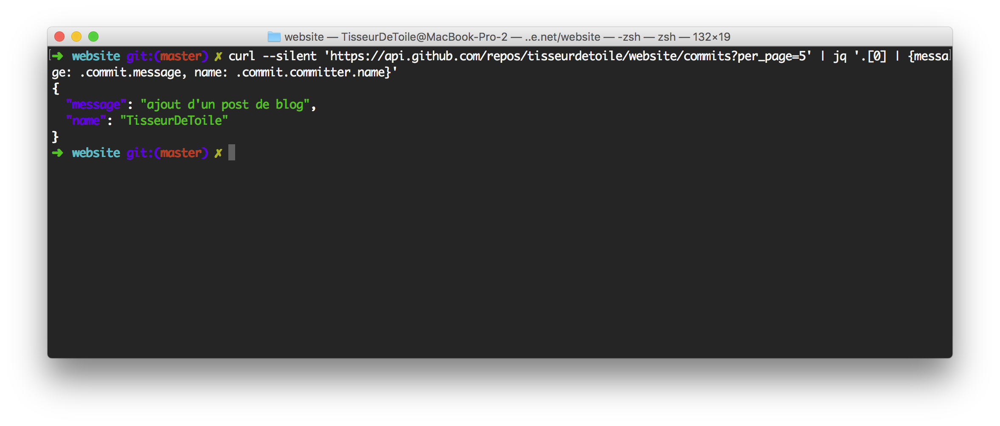
* site officiel
# curl 'https://api.github.com/repos/tisseurdetoile/website/commits?per_page=5' | jq '.[0] | {message: .commit.message, name: .commit.committer.name}'
{
"message": "ajout d'un post de blog",
"name": "TisseurDeToile"
}
brew install jq
Selon votre shell modifier le fichiers .zsh_alias ou bash_alias pour qu’il contienne les lignes suivantes.
# cat .zsh_alias
alias cat='bat'
alias ping='prettyping --nolegend'
alias top='sudo htop'
alias du='ncdu --color dark -rr -x --exclude .git --exclude node_modules'
alias help='tldr'